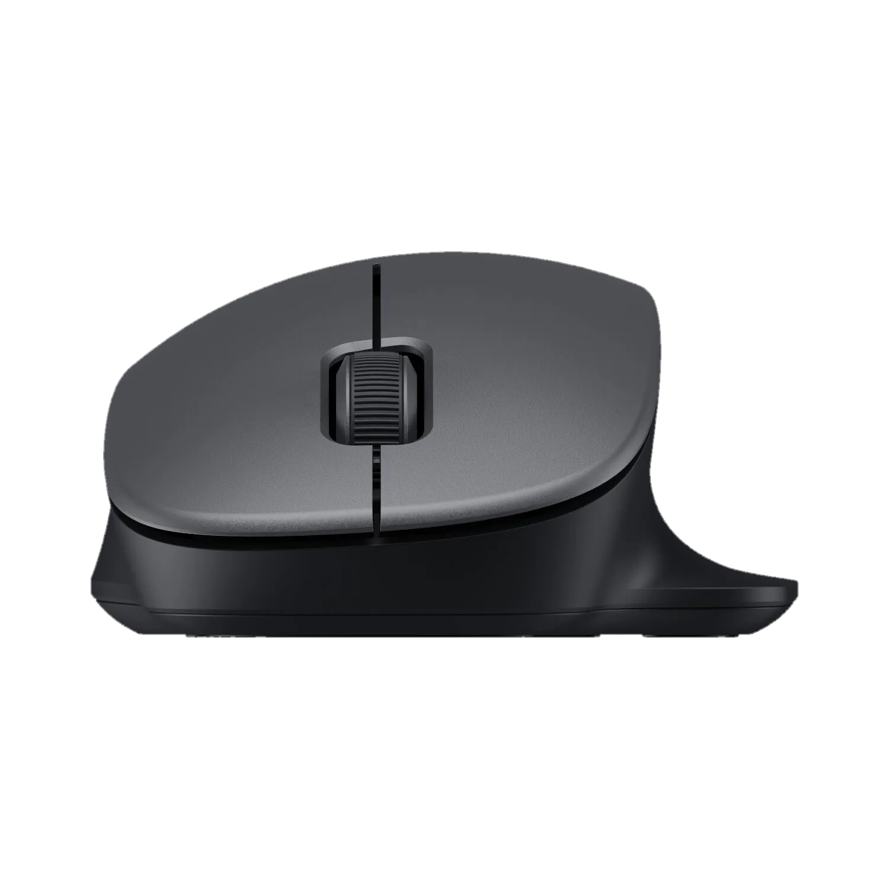
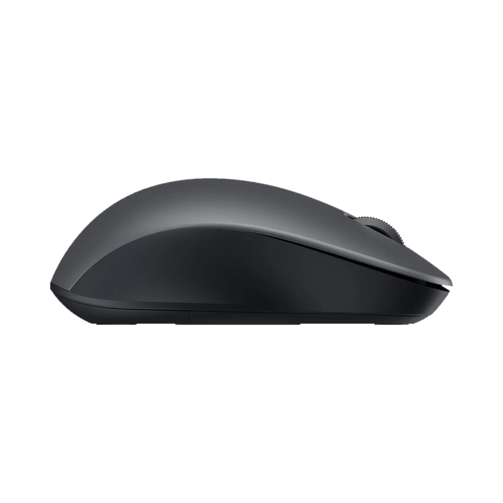
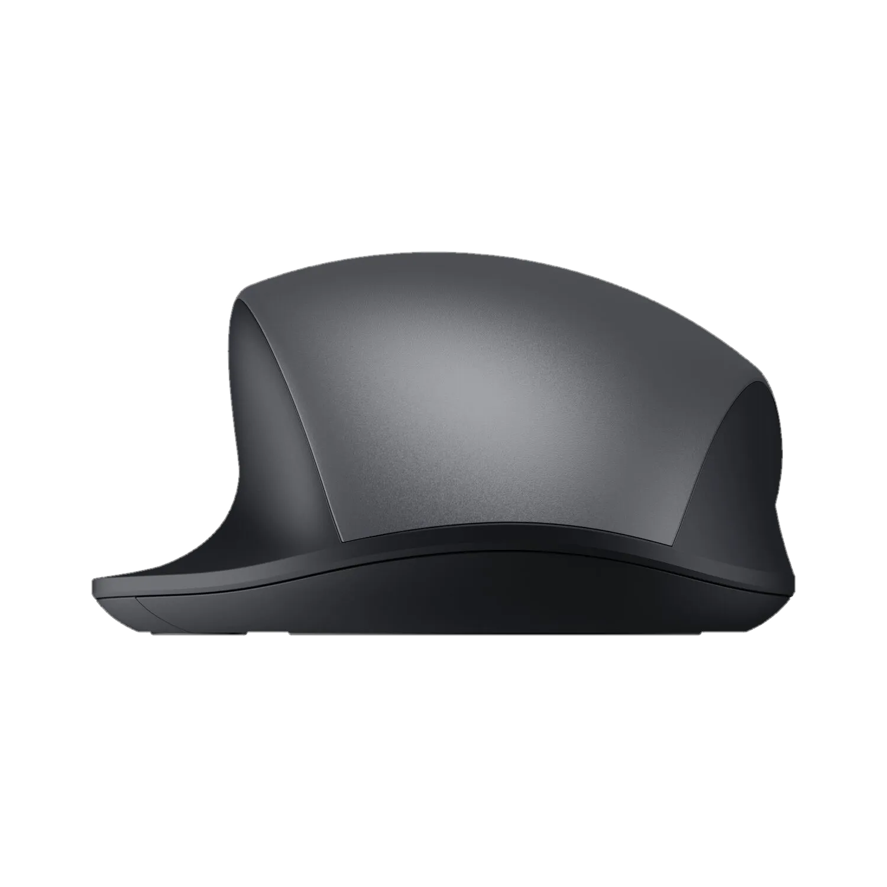
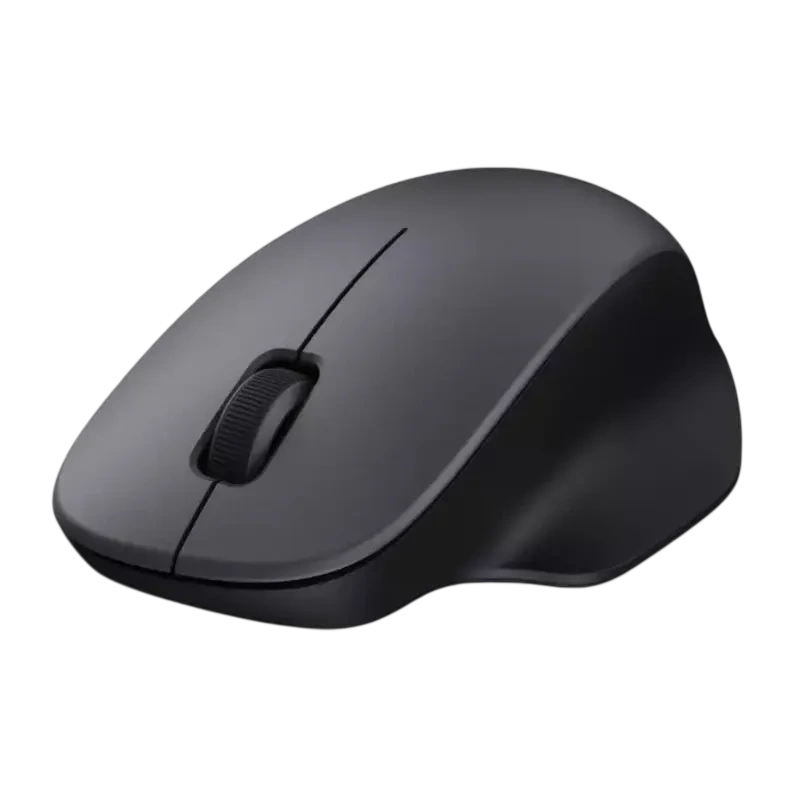

Benefícios do mouse
Conforto Ergonômico
Design que se adapta perfeitamente à sua mão, reduzindo fadiga mesmo após longas sessões de uso.
Precisão Profissional
Sensor óptico de alta sensibilidade oferece rastreamento preciso para trabalhos que exigem exatidão.
Conexão Estável
Tecnologia 2.4 GHz de baixa latência garante resposta instantânea sem interferências.
Bateria de Longa Duração
Até 30 dias de autonomia com uma única carga, ideal para trabalho contínuo.
Características Técnicas
Sensor
Óptico 6400 DPI ajustável
Conexão
Wireless 2.4 GHz, 10m alcance
Bateria
Recarregável, até 30 dias
Peso
95g (ultra leve)
Cores
Preto Elegante
Compatibilidade
Windows, macOS, Linux
Fotos adicionais




Avaliações de Clientes
"Excelente qualidade e conforto. Uso 8 horas por dia e não sinto fadiga."
- Marlene
"Precisão impecável. Recomendo para designers e programadores."
- Belmiro
"Melhor custo-benefício que já vi. Bateria dura muito mesmo."
- Rock Vicente
Avaliação média: 4.8/5 (com base em 250+ reviews)
Perguntas Frequentes
Compatível com quais sistemas?
Windows, macOS, Linux e Android. Funcionará com qualquer dispositivo com receptor USB 2.4 GHz.
Inclui cabo de carregamento?
Sim, cabo USB-C incluso. A bateria carrega completamente em aproximadamente 2 horas.
Qual é a duração da bateria?
Até 30 dias com carga completa em uso normal. Indicador LED de bateria baixa.
Qual a distância de funcionamento?
Até 10 metros de alcance sem obstáculos com conexão estável 2.4 GHz.